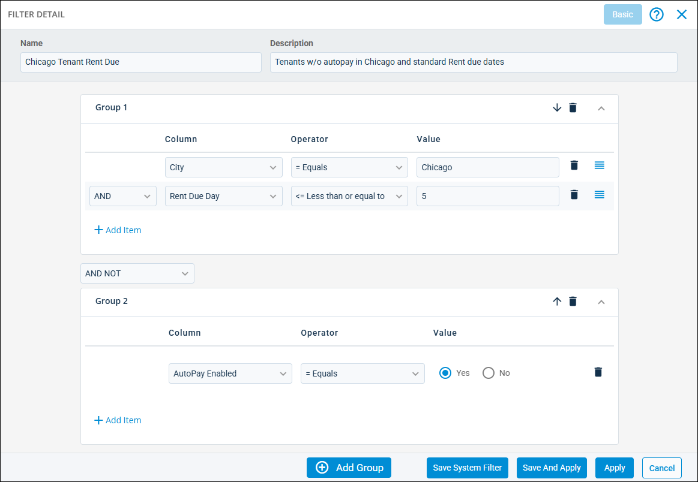
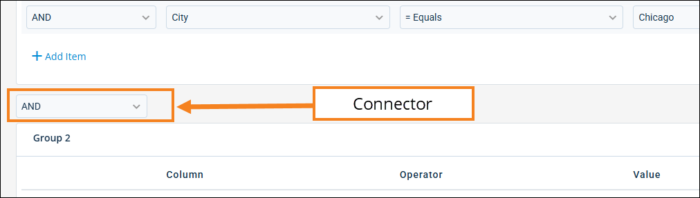

Source: https://rmxhelp.rentmanager.com/Topics/Express/Other/Advanced-Filters.htm
Create an Advanced Filter
Advanced filters allow you to create more complex and customized filters so you can limit the entities that display based on a set criteria in ways that may not be available in the basic filters. You can also choose to save advanced filters for your user account to use whenever you need, or you can save them as system filters to share with other users. Advanced filters also allow you to group your filters for a more granular, precise filter processing order.

Step 1: Create the Advanced Filter
To create an advanced filter, do the following:
-
Navigate to the entity page you wish to filter (such as the Tenants list page).
-
Next to the Saved Filters field, click
 .
.
The Filter Detail pop-up displays. -
If the fields for a basic filter display, click Advanced at the top. If this button does not display, the advanced filter is displayed by default.
-
If you intend to save this filter for repeated use or to share with other users, enter information in the following fields:
Field Description Name
A unique name to help identify the filter's purpose.
Description
A brief summary that explains what this filter is designed to display.
Step 2: Establish Your Base Filters
When creating your advanced filter, you must add at least one filter criterion. You can add as many filter criteria as needed. The initial filters in Group 1 determine your base filter needs and all run simultaneously to narrow down your search results (you can establish exceptions or additional filter groups that run after the first group in the following step).
To create your base filter(s), do the following:
-
In the Group 1 tile, click
 Add Item.
Add Item.
A row of filter columns displays. -
Enter or select information in the available columns described below.
Column Description Column
The field by which you are filtering the entity. The available fields vary depending on which entity list page (tenants, properties, owners, and so on) you are creating the filter from.
For example, if you are creating a tenant filter and select Address, you are creating a filter that searches for tenants that have addresses meeting a specific criteria.
Operator
The method by which you are filtering the selected Column field in relation to the desired Value. The operators available vary depending on the type of field selected in the Column column.
Each operator is described below.
Begins with
Results that start with the entered value display.
For example, if you enter a Value of chi, then all entities for the selected field with a value beginning with chi- display in the list.
Contains
Results that contain the entered value display.
For example, if you enter a Value of 513, then all entities for the selected field that have 513 anywhere in the value display in the list.
Ends with
Results that end with the entered value display.
For example, if you enter a Value of firm, then all entities for the selected field with a value ending with -firm display in the list.
In list
Results that can be found in the list selected in the Value column displays.
For example, you can individually select all the properties you wish to include in this filter and only those properties display.
Not in list
Results that cannot be found in the list selected in the Value column display.
For example, you can individually select each owner that should not be included in the filter and those owners will never display.
<> Does not equal
Results that do not match the exact entered value display.
For example, if you enter a Value of Yes, then all entities for the selected field with a value of exactly Yes do not display. Entries containing the value as a portion of the result (such as a value of Sometimes Yes) are still included in the results.
= Equals
Results that match the exact entered value display.
For example, if you have a Value of No, then all entities for the selected field with a value of exactly No display. Entries containing the value as a portion of the result (such as a value of Not Applicable) are not included in the results.
> Greater than
Results with a numeric value that is more than the entered value display. For date-type fields, dates that come after the entered value display.
>= Greater than or equal to
Results with a numeric value that is the same or more than (or more recent than) the entered value display.
< Less than
Results with a numeric value that is fewer than the entered value display. For date-type fields, dates that occurred before the entered value display.
<= Less than or equal to
Results with a numeric value that is fewer than (or older than) the entered value display.
Value
The number, word, or value (e.g., a property name) by which you are filtering the specified Column.
-
If you wish to add more filter criteria (known as a subordinate filter) to the initial filter group, click
Add Item again. -
To determine how this subordinate filter works in conjunction with the previous filter, in the first column, select one of the following filter connector options:
Option Description AND
Both this filter and the previous filter work together to narrow down results, allowing you to filter entities that meet both of the established criteria.
For example, you can use this option to filter for tenants that are in the city of Chicago and also pay rent on a weekly basis.
OR
This filter searches for entities separately from the previous filter, allowing you to filter entities that meet at least one of the criteria, but not necessarily both.
For example, if the previous filter(s) display properties in Michigan, you can use this filter to also display properties that are in Illinois.
AND NOT
This filter excludes exceptions from the previous filter, allowing you to filter entities that meet the previous filter's criteria without including entities that meet this filter's criteria.
For example, if the previous filter(s) display prospects at a specific property, you can use this filter to exclude prospects with a status of Lost.
-
For the subordinate filter, enter the remaining filter criteria into the Column, Operator, and Value columns.
-
Repeat until all filters for the initial search group are added.
Step 3: Add Additional Filter Groups
You can create groups of filters that should be handled together before examining other filter groups. This helps organize and refine your filter search to get exactly the results you need. With each new column or group, a connector is introduced. The purpose of a group connector is to allow the results of one filter to manipulate the results of the previous one.

The following table describes the order in which group filters are run when specific connectors are introduced in an advanced filter.
| Order Performed | Type of Filter |
|---|---|
|
First |
All filter groups (filters that have subordinate filters). |
|
Second |
Filters joined by an AND or an AND NOT connector. |
|
Third |
Filters joined by an OR connector. |
To add a new filter group, do the following:
-
Click
 Add Group.
Add Group. -
In the group connector drop-down between the two group tiles, select one of the following options:
Option Description AND
Both this filter group and the previous filter group work together to narrow down results, allowing you to filter entities that meet both of the filter groups' established criteria.
For example, if the first group filters for monthly tenants in Chicago, you can use this group to further filter those tenants to display only tenants that also have ePay AutoPay enabled.
OR
This filter group searches for entities separately from the previous filter group, allowing you to display entities that meet one filter group criteria, then also entities that fit the second filter group. The entities display as long as they meet one of the group's criteria, not necessarily both.
For example, if the previous filter group displays units at a specific property with two bedrooms, you can use this filter group to also display units at a different property with two bedrooms.
AND NOT
This filter group excludes exceptions from the previous filter group, allowing you to filter entities that meet the previous filter's group's criteria without including entities that meet this filter group's criteria.
For example, if the previous filter group displays for all prospects living in a specific state, you can use this filter group to exclude weekly prospects that live in a specific city.
- In the Group 2 tile, click Add Item to add each filter you need for this filter group, similar to how you added filters to Group 1.
- Repeat until all groups and all filters needed are added to the advanced filter.
Step 4: Save or Apply the Advanced Filter
Once you have finished creating your filter, you can choose to use it just this once, or you can save the filter so that you or other users can use it repeatedly. To use or save the filter, at the bottom of the pop-up, click one of the following:
| Option | Description | ||||||
|---|---|---|---|---|---|---|---|
|
Save System Filter |
Related Privileges
For more information, refer to Control User Access. Click to assign which user(s) or user role(s) that should have access to use this filter for this entity. In the User/Role Name field, select each user or role that can use this filter. Alternatively, check All Users to grant the filter to every user in the database. Then click Save. |
||||||
|
Save And Apply |
Click to save the filter for your personal use. You can then select or edit this filter as needed in the future. |
||||||
|
Apply |
Filter the entity page one time based on the established filter criteria. The filter is not saved and will have to be recreated to use it again. |
Once you select any of these options, the Filter Detail pop-up closes and the entity list is filtered by your selected criteria.
More Information
You can use saved filters in the future by selecting them from the Saved Filters field. To edit a saved filter, select the filter and click  arrow_forward Edit to change how it filters or choose to save it as a system filter.
arrow_forward Edit to change how it filters or choose to save it as a system filter.